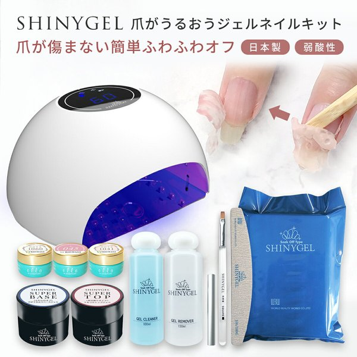
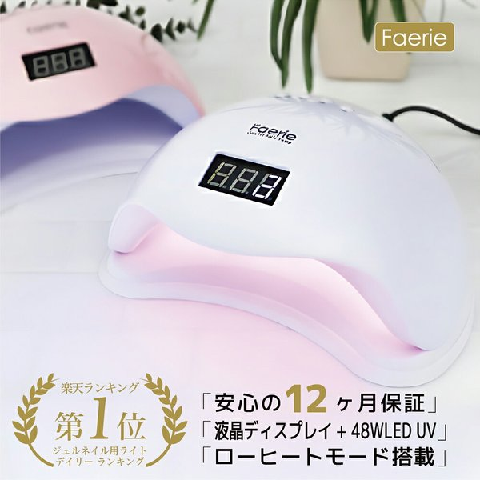
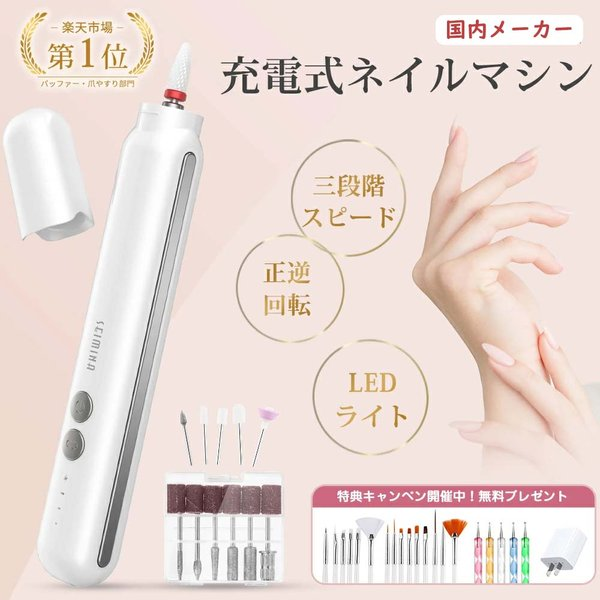
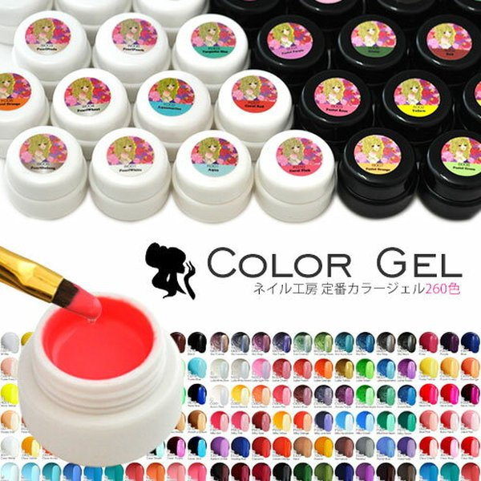
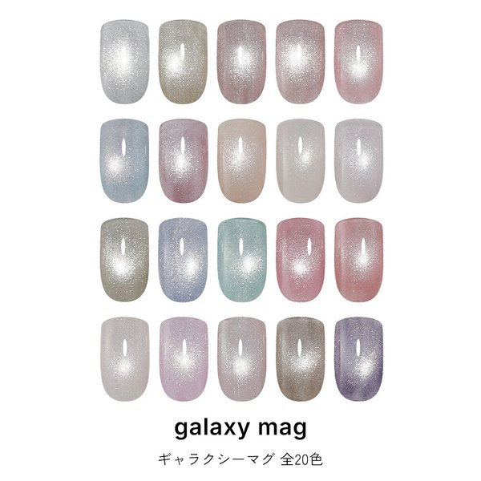
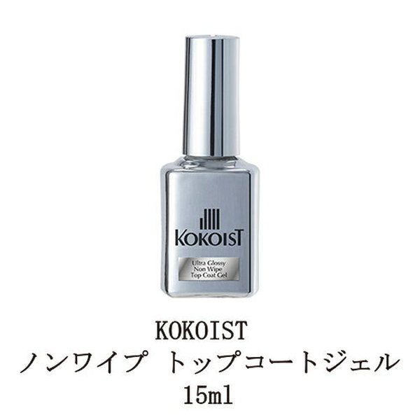
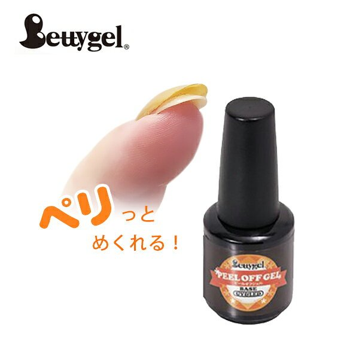
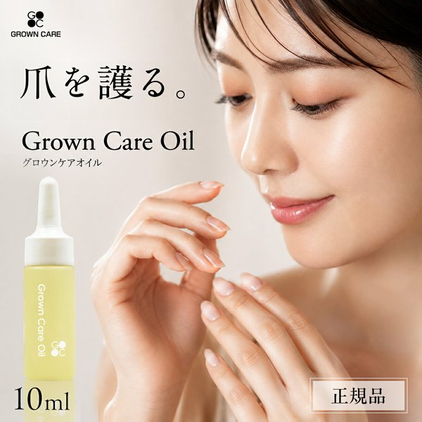
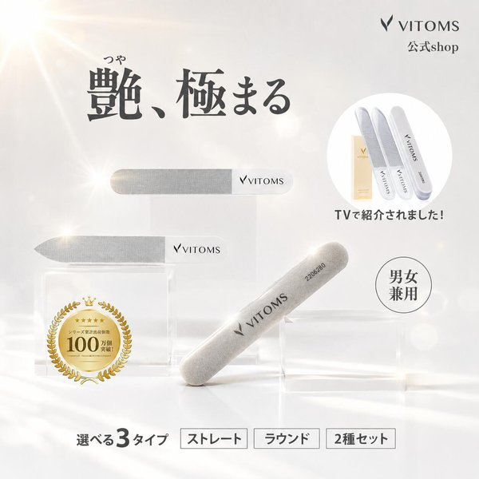
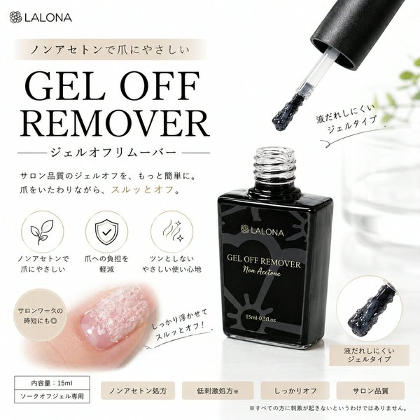

【2026年・セルフジェルネイル】初心者キットと指先ケア10選｜シャイニージェル18Wキット・Faerieネイルライト・SEIMINAネイルマシン・ネイル工房カラージェル・ネイルタウン マグネットジェル・KOKOISTトップコートを実売価格で比較
セルフジェルネイルは、道具を揃えてしまえば1回あたりの費用が下がります。ただ、いきなり全部を買うと使わない道具が出ます。まずは硬化する道具とベース、色を1つずつ。慣れてからパーツやマシンを足す順番が、失敗の少ない揃え方です。
選ぶ軸は3つです。まずライト。キットに付属する18Wで始めて、硬化が足りないと感じたら48Wを足します。次にオフの方法。ピールオフのベースなら爪先からはがすだけ、長持ちさせたいならトップコートとリムーバーを使います。最後に爪の状態。薄くなっている時期はサンディング不要のベースとオイルで休ませます。なお、レビュー件数が50件に満たない商品は記事内に実数を明記しています。
本記事では、楽天市場で人気・高評価のセルフジェルネイル＆指先ネイルケア10選を、実売価格とレビュー評価つきで写真付き紹介します。
- おすすめ10選 スペック・特徴比較表
- BEST 1｜シャイニージェル ジェルネイルキット 18W LEDランプ付き
- BEST 2｜Faerie ネイルライト 48W（UV/LED対応・人感センサー）
- BEST 3｜SEIMINA 12in1 ネイルマシン（コードレス・LEDライト付き）
- BEST 4｜ネイル工房 カラージェル（全230色から1色選択・3g）
- BEST 5｜ネイルタウン ギャラクシーマグネットジェル（全20色・約3g）
- BEST 6｜KOKOIST ウルトラグロッシー ノンワイプトップコートジェル 15ml
- BEST 7｜ベティージェル ピールオフジェル ベースジェル 12g
- BEST 8｜Grown Care キューティクルケアオイル 10ml
- BEST 9｜VITOMS ガラス爪やすり（クリア・ケース付き）
- BEST 10｜ラローナ ジェルオフリムーバー 15ml（アセトンフリー）
- 【読者負担0円】買わなくても得する無料サービス
- まとめ：セルフジェルネイルの道具10選の選び方
| 順位 | 商品名 | ブランド | 最大の特徴・おすすめ理由 | 総合評価 |
|---|---|---|---|---|
| BEST 1 | シャイニージェル ジェルネイルキット 18W LEDランプ付き | シャイニージェル（SHINYGEL） | LEDランプとジェルが揃って届く | 4.50 |
| BEST 2 | Faerie ネイルライト 48W（UV/LED対応・人感センサー） | Faerie（フェアリー） | UV/LED両対応の48W | 4.40 |
| BEST 3 | SEIMINA 12in1 ネイルマシン（コードレス・LEDライト付き） | SEIMINA（セイミナ） | 12の用途を1台でこなす | 4.46 |
| BEST 4 | ネイル工房 カラージェル（全230色から1色選択・3g） | ネイル工房 | 全230色から1色ずつ選べる | 4.39 |
| BEST 5 | ネイルタウン ギャラクシーマグネットジェル（全20色・約3g） | ネイルタウン（NAILTOWN） | 磁石で模様を作れる | 4.63 |
| BEST 6 | KOKOIST ウルトラグロッシー ノンワイプトップコートジェル 15ml | KOKOIST（ココイスト） | 拭き取り不要で手順が減る | 4.80 |
| BEST 7 | ベティージェル ピールオフジェル ベースジェル 12g | ベティージェル（Bettygel） | はがすだけでオフできる | 4.49 |
| BEST 8 | Grown Care キューティクルケアオイル 10ml | Grown Care（グロウンケア） | 甘皮と爪の乾燥をケアする | 4.77 |
| BEST 9 | VITOMS ガラス爪やすり（クリア・ケース付き） | VITOMS（ビトムス） | 削りすぎずに形を整えられる | 4.62 |
| BEST 10 | ラローナ ジェルオフリムーバー 15ml（アセトンフリー） | ラローナ（LALONA） | 塗って置くだけでオフできる | 4.27 |
シャイニージェル ジェルネイルキット 18W LEDランプ付き

シャイニージェルのジェルネイルキットは、18WのLEDランプとベース・トップ、カラーが揃ったスターターセットです。爪にうるおいを残すベースジェルで、硬化後のオフも簡単。初めてでも手順どおりに進めれば、サロンと同じ流れで仕上げられます。楽天市場での実売価格は約12,650円（2026年11月時点）。
- LEDランプとジェルが揃って届く
- はがしやすいベースジェル付き
- 初めてのセルフネイルに向く
- カラーの色数は限られるため、追加で色を買い足すことになる
Faerie ネイルライト 48W（UV/LED対応・人感センサー）

Faerieのネイルライトは、UV/LED両対応の48Wライトです。人感センサーで手を入れると点灯し、硬化熱を抑える低ヒート機能付き。奥行きのある設計で、片手5本をまとめて硬化できます。楽天市場での実売価格は約2,650円（2026年11月時点）。
- UV/LED両対応の48W
- 人感センサーでスイッチ不要
- 低ヒート機能でしみにくい
- サイズが大きめで、収納場所を取る
SEIMINA 12in1 ネイルマシン（コードレス・LEDライト付き）

SEIMINAの12in1は、コードレスの電動ネイルマシンです。研磨・角質除去・爪切りなど12の用途に対応し、回転方向と速度を切り替えられます。LEDライト付きで、ジェルオフや甘皮処理の手元が見やすいのが利点です。楽天市場での実売価格は約2,580円（2026年11月時点）。
- 12の用途を1台でこなす
- コードレスで手元が軽い
- LEDライト付きで手元が見える
- パーツが多く、初めは用途の選び方に慣れが要る
ネイル工房 カラージェル（全230色から1色選択・3g）

ネイル工房のカラージェルは、全230色から1色ずつ選べる3gのジェルです。トレンドカラーから定番の肌なじみカラー、ラメまで揃い、硬化はLED/UVライトに対応します。1色から試せるので、色を集める前に好みを確かめられます。楽天市場での実売価格は約275円（2026年11月時点）。
- 全230色から1色ずつ選べる
- 3g入りで試しやすい
- LED/UVライトで硬化できる
- 1色ずつの購入なので、まとめて揃えると送料がかさむ
ネイルタウン ギャラクシーマグネットジェル（全20色・約3g）

ネイルタウンのギャラクシーマグネットジェルは、磁石で模様を出すマグネットジェルです。全20色、38ミクロンの粒子が入り、光の角度で深みが変わります。上からトップコートを重ねると、粒子が沈まず模様が残ります。楽天市場での実売価格は約385円（2026年11月時点）。
- 磁石で模様を作れる
- 全20色から選べる
- 粒子が細かく深みが出る
- 模様を出すには磁石を近づけるタイミングに慣れが要る
KOKOIST ウルトラグロッシー ノンワイプトップコートジェル 15ml

KOKOISTのウルトラグロッシーノンワイプトップコートは、拭き取り不要のトップジェルです。15mlのボトルで、硬化後の表面がツヤのある仕上がりになります。未硬化ジェルを拭かずに次の工程へ進めるので、手順を1つ減らせます。楽天市場での実売価格は約3,160円（2026年11月時点）。
- 拭き取り不要で手順が減る
- 硬化後につやが出る
- 15mlのボトルで使い切りやすい
- 硬化時間はライトの出力に合わせて調整する必要がある
ベティージェル ピールオフジェル ベースジェル 12g

ベティージェルのピールオフジェルは、ベースとして塗るとはがせるベースジェルです。12g入りで、上にカラーを重ねても、最後に爪先からめくるとまとめて外れます。サンディングが不要で、爪への負担を抑えたい人に向きます。楽天市場での実売価格は約1,995円（2026年11月時点）。
- はがすだけでオフできる
- サンディング不要で爪に優しい
- 12g入りで長く使える
- 持ちはジェルより短く、1週間ほどで浮いてくることがある
Grown Care キューティクルケアオイル 10ml

Grown Careのキューティクルケアオイルは、指先の甘皮と爪に塗るオイルです。10mlのスポイトタイプで、植物性のオイルを主体にしています。ジェルを外したあとの乾燥した爪になじませ、ささくれを防ぐために使います。楽天市場での実売価格は約2,380円（2026年11月時点）。
- 甘皮と爪の乾燥をケアする
- スポイトで量を調整できる
- ジェルオフ後のケアに向く
- 10mlと小ぶりなので、毎日使うと1〜2か月で使い切る
VITOMS ガラス爪やすり（クリア・ケース付き）

VITOMSのガラス爪やすりは、ガラス製のファイルで、削りすぎずに爪の形を整えます。表面の細かい目で削ったあと、裏面で磨くとつやが出ます。ハードケース付きで、洗って繰り返し使えるのが利点です。楽天市場での実売価格は約1,280円（2026年11月時点）。
- 削りすぎずに形を整えられる
- 裏面で磨くとつやが出る
- 洗って繰り返し使える
- ガラス製のため、落とすと欠けることがある
ラローナ ジェルオフリムーバー 15ml（アセトンフリー）

ラローナのジェルオフリムーバーは、塗って置くだけでジェルを浮かせるリムーバーです。15mlのボトルで、アセトンフリーの処方。ホイルで巻く手間がなく、爪への負担を抑えながらオフできます。楽天市場での実売価格は約1,650円（2026年11月時点）。
- 塗って置くだけでオフできる
- アセトンフリーの処方
- ホイル巻きの手間がない
- 1回で広範囲に塗るため、頻繁に使うと減りが早い
この記事の商品を買う前に、まずは無料で得する選択肢をチェック。どれも登録・利用は0円で、無料期間中に解約すれば料金はかかりません。読みたい雑誌がある人、ポイントを貯めたい人、アンケートなら気軽という人、それぞれに合うものを選べます。
初回31日無料・無料期間中に解約すれば0円 → 楽天ポイントモール｜登録無料で毎日ポイ活
買い物なしでもポイントが貯まる無料サービス → 楽天インサイト｜アンケートに答えてポイント
登録無料・すきま時間のアンケートで貯まる → 楽天カード｜年会費永年無料
新規発行・年会費ずっと0円 →
4つのサービスの違いと使い分けは「出費0円で得する！買わずにポイントが貯まる無料サービス厳選4選」でまとめています。
💡 まとめ：セルフジェルネイルの道具10選の選び方
セルフジェルネイルは、硬化・色・オフの3つを揃えると一通りできるようになります。最初の1セットはシャイニージェルの18Wキット。硬化が物足りなくなったらFaerieの48Wライトを足し、色はネイル工房のカラージェルから1色ずつ、模様を出したい日はネイルタウンのギャラクシーマグネットジェルを重ねます。仕上げはKOKOISTのノンワイプトップコートでつやを出し、オフはベティージェルのピールオフジェルか、ラローナのリムーバーで。甘皮と爪の乾燥はGrown Careのオイル、形を整えるのはVITOMSのガラス爪やすり、甘皮処理やオフの掃除はSEIMINAのネイルマシンがあると楽になります。まずはキットとオイルの2つから始めると、爪を傷めずに続けられます。
楽天市場では「5と0のつく日」や「お買い物マラソン」などのキャンペーンに合わせて購入すると、ポイント還元が最大化してお得に手に入ります。ぜひチェックしてみてくださいね。